Top inshore boatTamarindo
 Top offshore boatTamarindo
Top offshore boatTamarindo
 Top inshore boatFlamingo
Tamarindo
Top inshore boatFlamingo
Tamarindo
 Tamarindo · Flamingo
Tamarindo · Flamingo
 Tamarindo
Flamingo
Top offshore boatFlamingo · Tamarindo
Tamarindo
Tamarindo
Top offshore boatTamarindo
Flamingo · Tamarindo
Top offshore boatFlamingo · Tamarindo
Top offshore boatFlamingo · Tamarindo
Flamingo
Tamarindo
Tamarindo
Tamarindo
Flamingo
Top offshore boatFlamingo · Tamarindo
Tamarindo
Tamarindo
Top offshore boatTamarindo
Flamingo · Tamarindo
Top offshore boatFlamingo · Tamarindo
Top offshore boatFlamingo · Tamarindo
Flamingo
Tamarindo
Tamarindo

21' Custom Center Console
½ day$700¾ day$950Full$1,200
$700 half day · per boatView boat →
28' Century
½ day$750¾ day$925Full$1,150
$750 half day · per boatView boat →
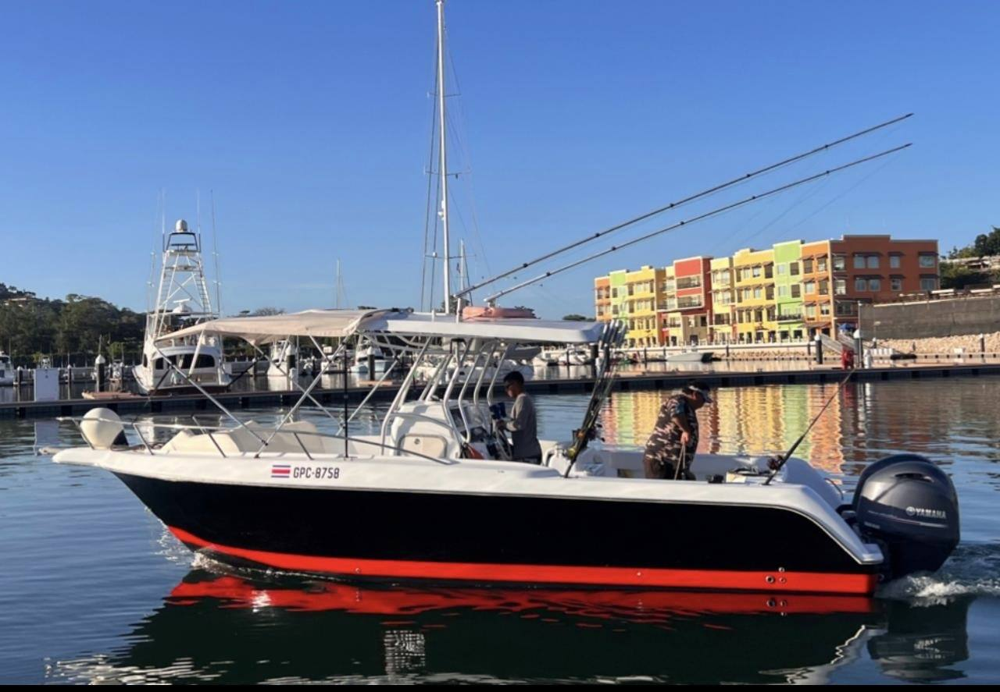
29' Center Console
½ day$775¾ day$975Full$1,175
$775 half day · per boatView boat →
31' Gamefisher II
½ day$950¾ day$1,250Full$1,450
$950 half day · per boatView boat →
28' Whitewater Center Console
½ day$975¾ day$1,200Full$1,400
$975 half day · per boatView boat →
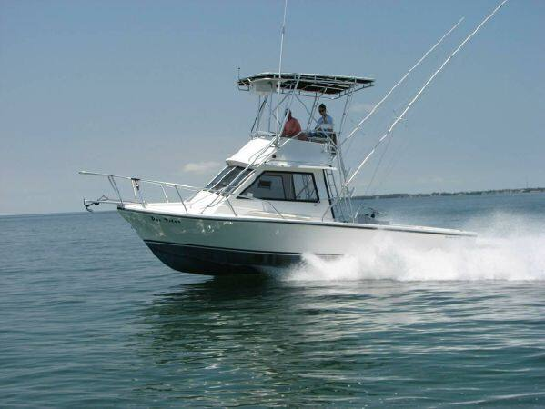
31' Island Hopper
½ day$1,050¾ day$1,350Full$1,550
$1,050 half day · per boatView boat →
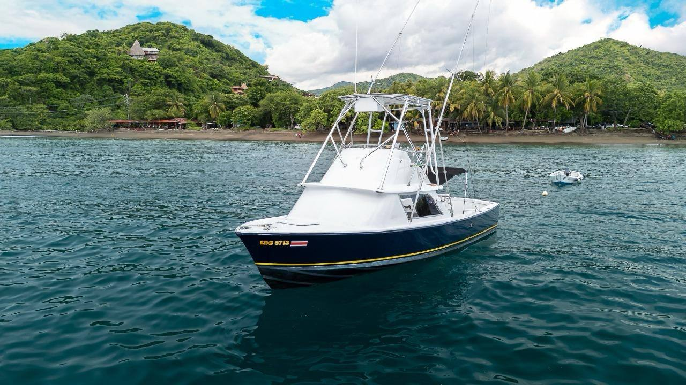
31' Bertram Classic
½ day$1,100¾ day$1,400Full$1,600
$1,100 half day · per boatView boat →
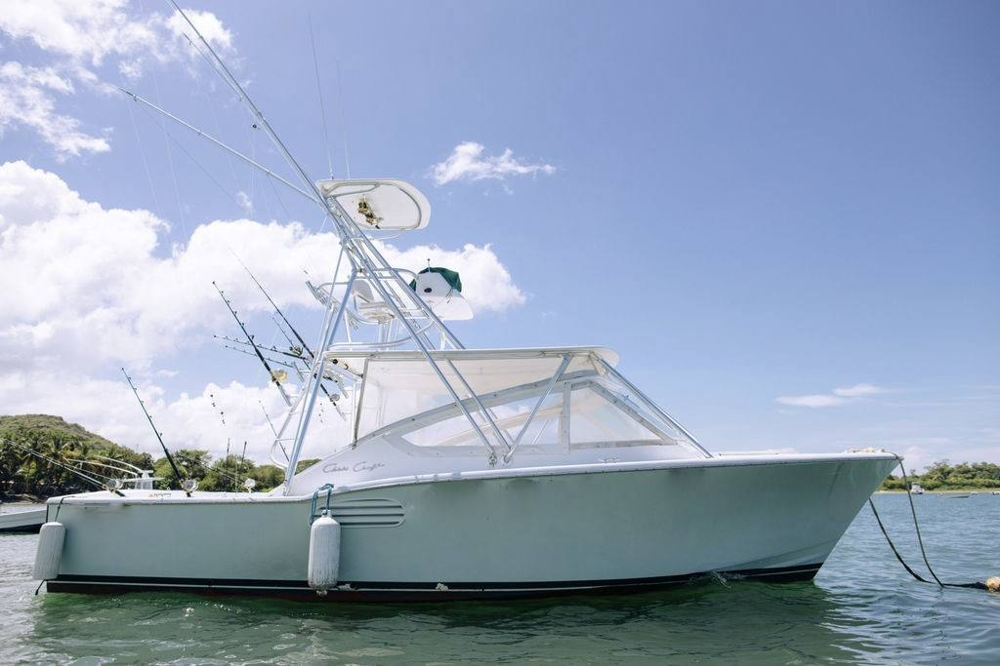
31' Chris Craft
½ day$1,100¾ day$1,400Full$1,600
$1,100 half day · per boatView boat →
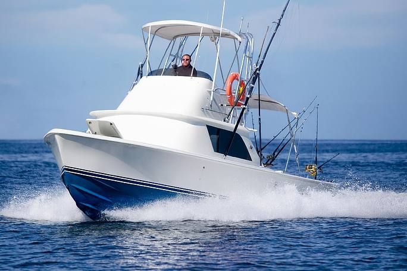
31' Custom Bertram
½ day$1,100¾ day$1,400Full$1,600
$1,100 half day · per boatView boat →
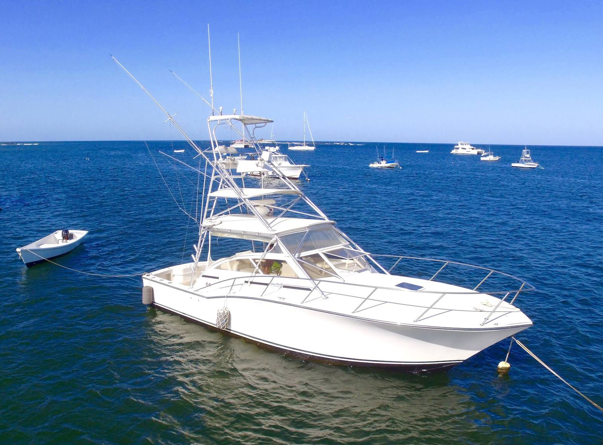
35' Carolina Classic
½ day$1,250¾ day$1,750Full$1,950
$1,250 half day · per boatView boat →
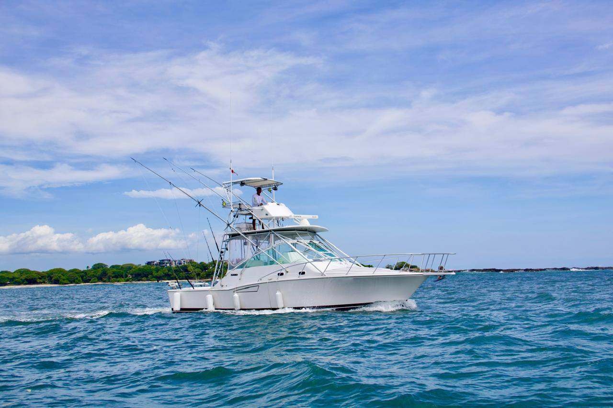
35' Cabo Express
½ day$1,380¾ day$1,850Full$2,050
$1,380 half day · per boatView boat →
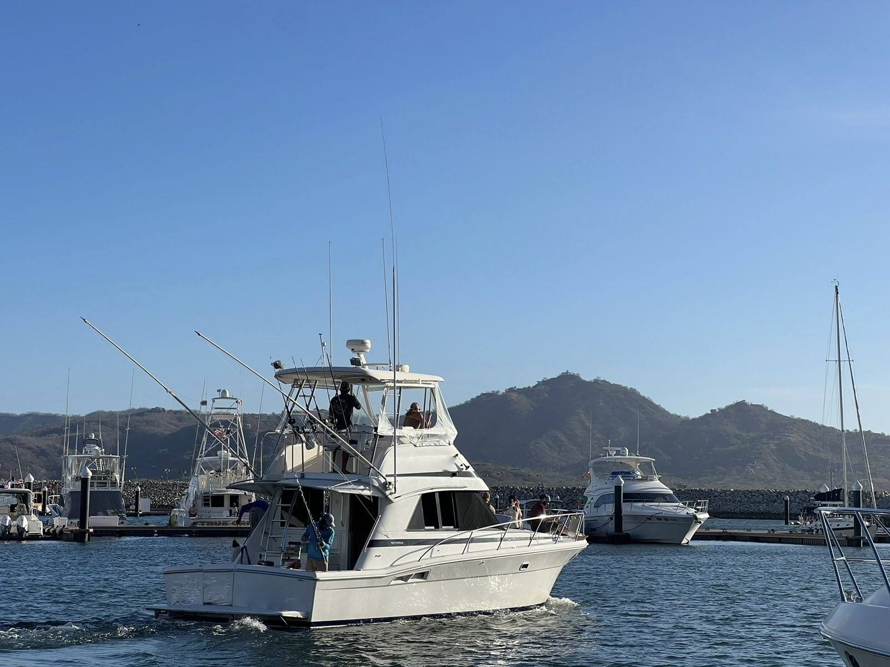
38' Riviera
½ day$1,750¾ day$2,150Full$2,350
$1,750 half day · per boatView boat →
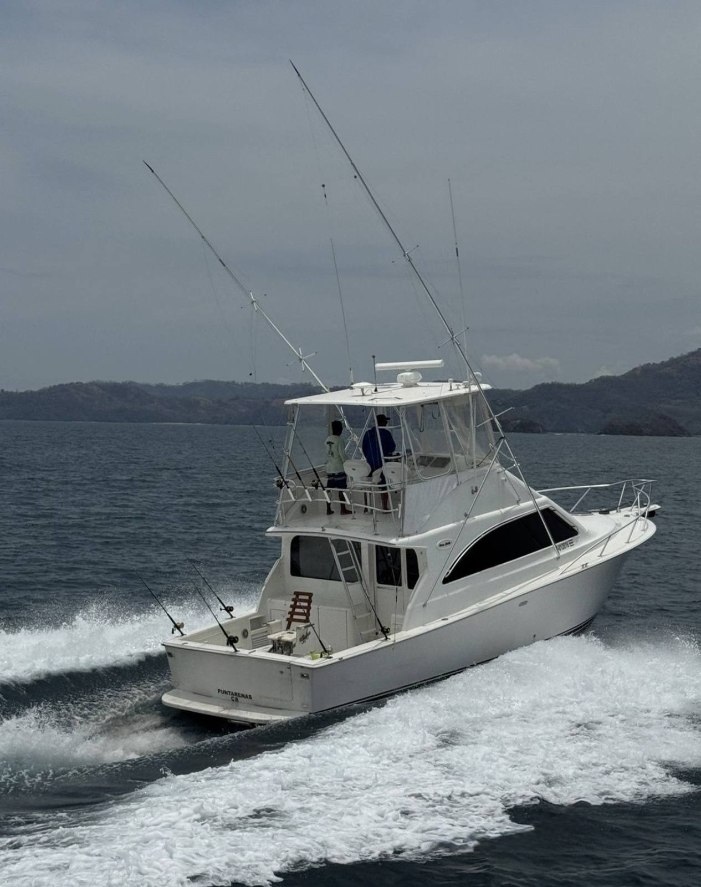
43' Ocean
½ day$2,100¾ day$2,500Full$2,800
$2,100 half day · per boatView boat →
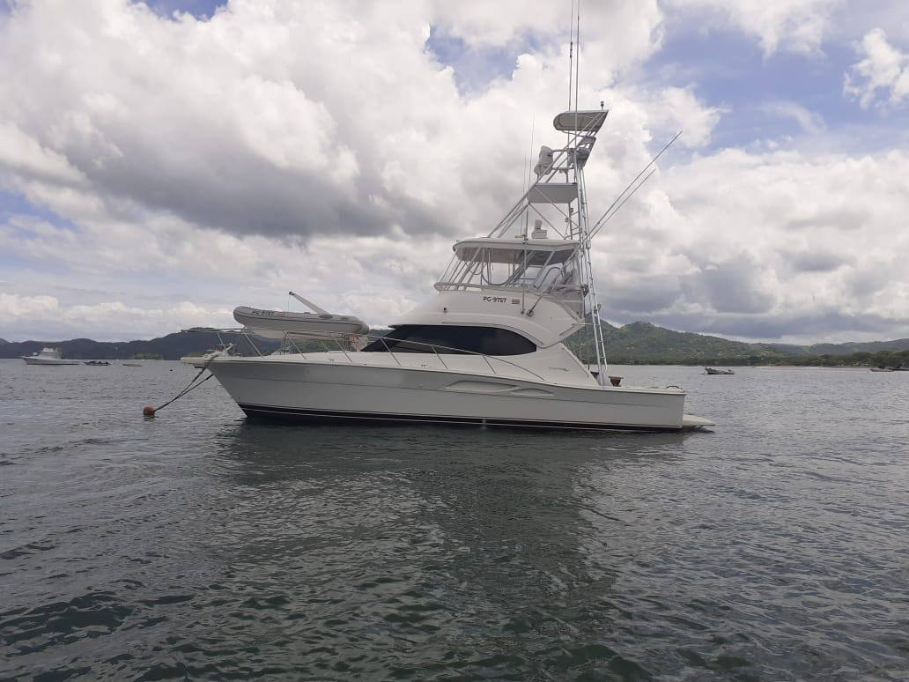
43' Riviera Team Edition
½ day$2,100¾ day$2,500Full$2,800
$2,100 half day · per boatView boat →
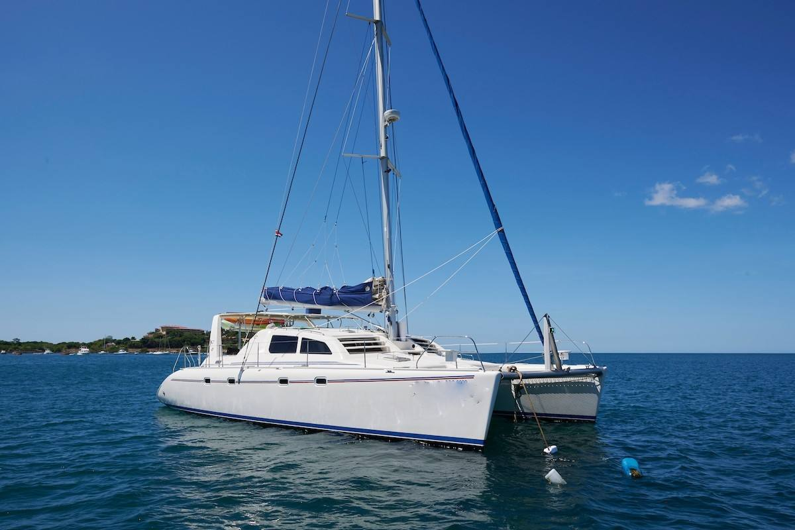
40' Lagoon Private Catamaran
½ dayQuote¾ dayQuoteFullQuote
Quote private sailView boat →
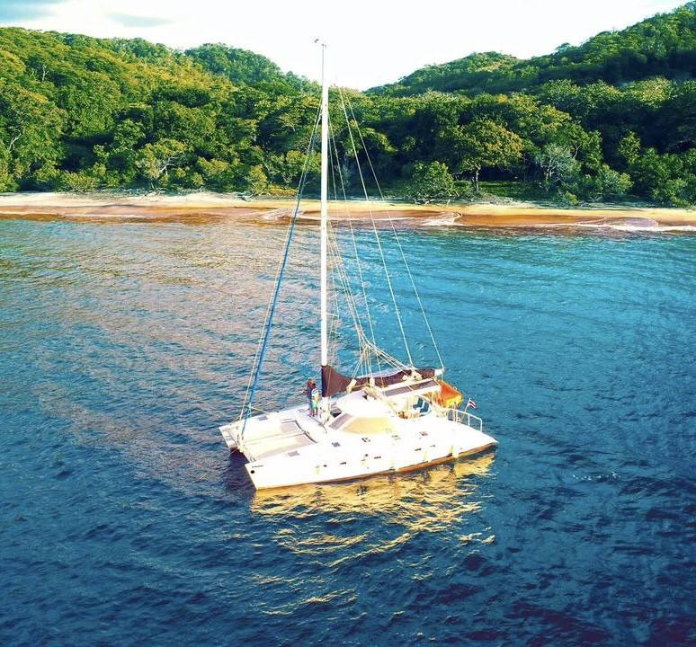
42' Lagoon Private Catamaran
½ dayQuote¾ dayQuoteFullQuote
Quote private sailView boat →
65' Private Catamaran
½ dayQuote¾ dayQuoteFullQuote
Quote private sailView boat →
Included on every charter
- Fishing gear, bait and tackle
- Fruit, soda, juice, water and beer
- Light lunch on 3/4 and full day charters
- Captain and crew who speak English
- Full insurance and Costa Rican permits
Not included
- Fishing licenses
- Crew tips (15–20% is customary)
Boats stay inshore on half days. To target billfish, book a 3/4 or full day offshore.